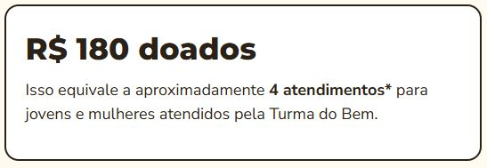
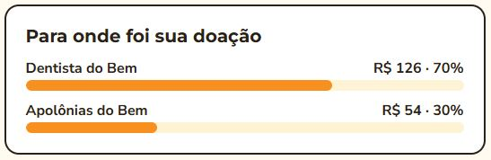
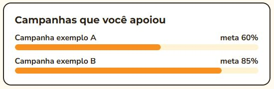

Challenge FIAP × Turma do Bem
Painel de impacto
O doador consegue visualizar o resultado das suas doações, para onde o dinheiro foi e quem a doação ajudou.
O problema
Quem não vê o que a doação provoca tem menos motivos para continuar. Mostrar o impacto de forma concreta aumenta a chance de a pessoa virar doadora recorrente.
Como o Sorriso Recorrente resolve isso
- Banner de impactoConverte o valor doado em atendimentos estimados.
- Cards por programaMostram a destinação da doação entre Dentista do Bem e Apolônias do Bem.
- Campanhas apoiadasProgresso de cada campanha em relação à meta.
Protótipo · dados fictícios


